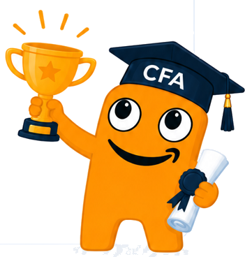
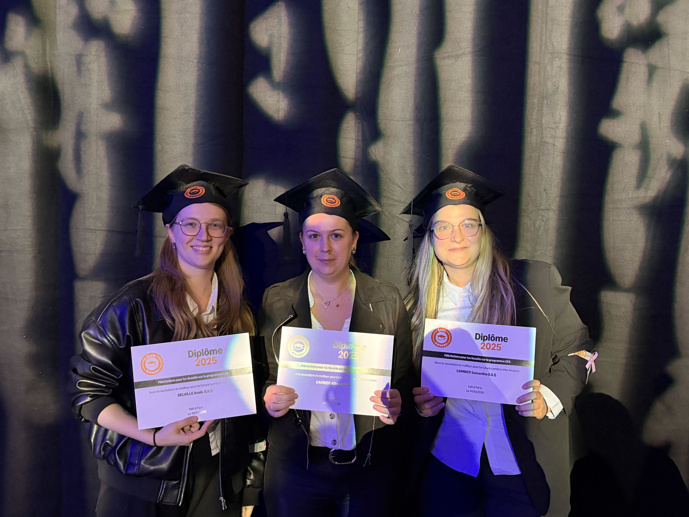
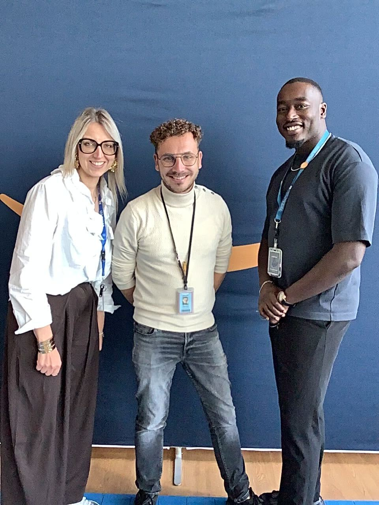
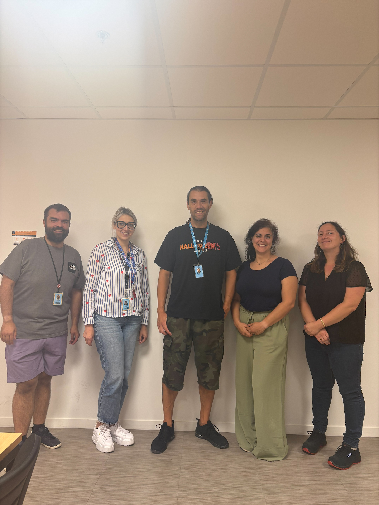
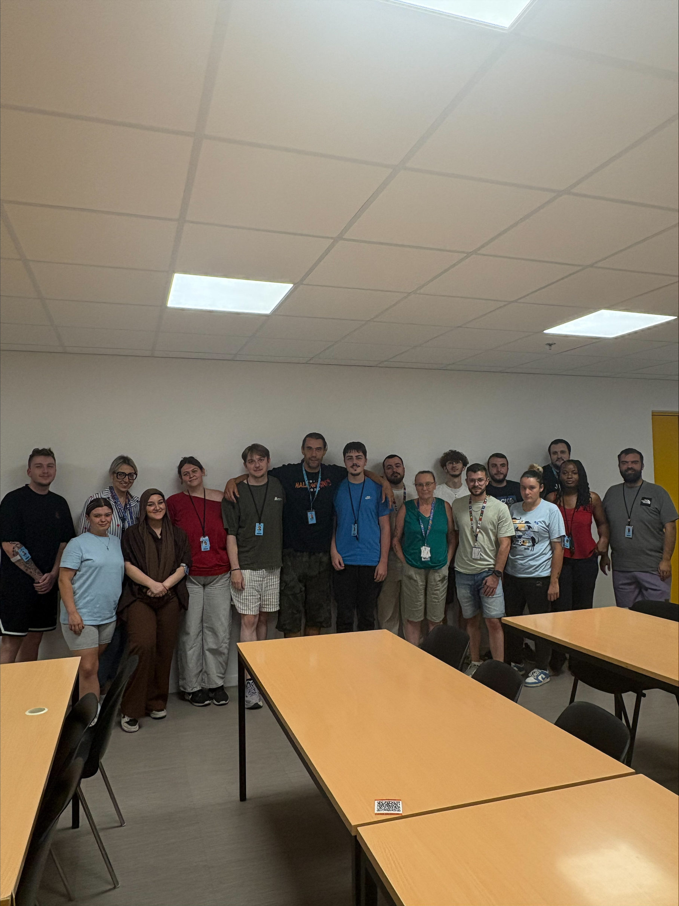
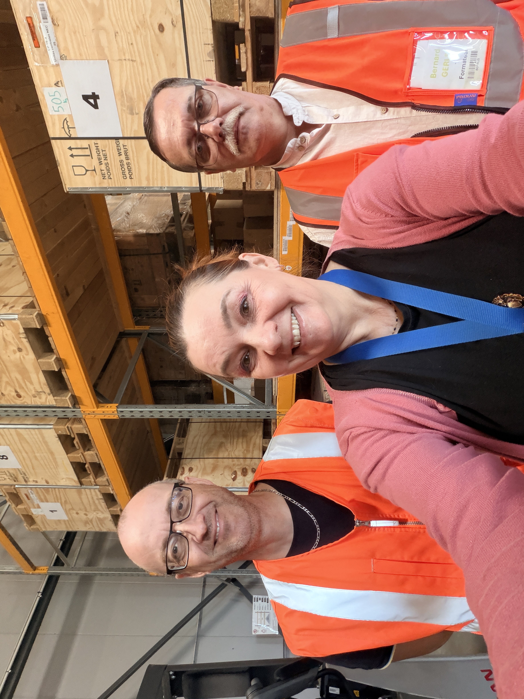
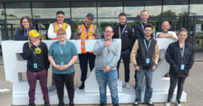
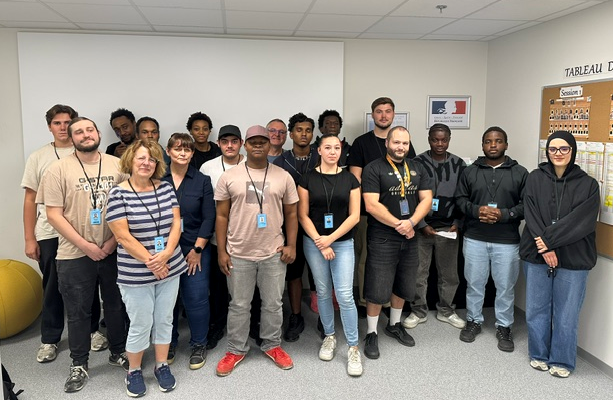

sur l'apprentissage


Des parcours, des rencontres et des réussites racontés par celles et ceux qui les vivent au quotidien.
Le 14 octobre 2026, le siège d'Amazon France a accueilli la cérémonie de remise des diplômes de nos apprentis. Nos trainers ont fait le déplacement aux côtés de leurs apprenants diplômés pour célébrer ensemble des mois d'engagement, d'apprentissage et de réussite. Un moment convivial et plein d'émotion, qui récompense le parcours de chacun et la fierté de toute l'équipe du CFA Amazon !



Amandine, Pierrick et M'Paly, nos trainers 💙
« Voir nos apprentis recevoir leur diplôme, c'est la plus belle des récompenses. Quelle fierté de partager ce moment avec eux ! »
« Une journée conviviale et pleine d'émotion : chaque sourire sur scène racontait des mois d'efforts. Bravo à tous ! »
« Ce diplôme, ils l'ont mérité. Les accompagner jusqu'à CDG10 pour le célébrer ensemble, c'était un moment inoubliable. »
🎓 Nos Maîtres d'Apprentissage — LIL1
Celles et ceux qui accompagnent nos apprentis au quotidien


"Fier d'être aux côtés de mon équipe CFA, une expérience enrichissante au quotidien"
"Une expérience humaine incroyable"
"Faire partie du CFA a été une expérience enrichissante, me permettant d'accompagner et de conseiller les apprentis tout en partageant mon expérience"
"Une très belle aventure avec une équipe formidable, ravie de faire partie de ce groupe et d'accompagner, d'aider nos apprentis"
"Accompagner, transmettre, faire grandir : l'aventure des Maîtres d'apprentissages"
"Expérience qui fait grandir, tant pour les apprentis que pour les maîtres d'apprentissage"
"Une expérience extraordinaire qui change notre quotidien. En tant que maître d'apprentissage cela nous apprend à grandir"
"C'est en faisant grandir les autres que l'on grandit soi-même. C'est une très bonne expérience, enrichissante humainement et techniquement"
"Une expérience professionnelle et personnelle magnifique. J'espère continuer à partager notre savoir-faire. Merci pour cette belle aventure 😁"
"Heureuse de faire partie de cette équipe! Une aventure qui permet de partager nos savoirs et d'aider. Expérience très enrichissante humainement et professionnellement"

"Cette formation a été une expérience particulièrement enrichissante et marquante. Elle m'a permis d'acquérir de nouvelles compétences tout en renforçant mes connaissances."
Durant la formation nous avons été accompagnés de A à Z. Notre formatrice Amandine a vraiment été présente tout au long de la formation. Je recommande vivement de réaliser un contrat d'apprentissage chez Amazon. C'est une excellente opportunité pour acquérir une expérience professionnelle, développer de nouvelles compétences et évoluer dans un environnement dynamique. Cette expérience permet de découvrir le fonctionnement d'une grande entreprise tout en bénéficiant d'un accompagnement qui favorise l'apprentissage et le développement professionnel. Grâce à ce titre professionnel j'ai pu signer un CDI.
En vous souhaitant une bonne réussite et une bonne continuation.
🎙️
Témoignage en cours de collecte... Bientôt disponible !
"Accompagner Allison a été un vrai plaisir. Dès le premier jour, elle avait le bon mindset : sérieuse, impliquée, toujours volontaire. La voir décrocher son titre et intégrer l'équipe en CDI, c'est une immense fierté. C'est exactement pour ces réussites qu'on fait ce métier."


Je m'appelle Nicolas et je suis malentendant. J'avais presque abandonné l'idée qu'un lieu de travail puisse être différent.
Puis un ami proche, lui aussi malentendant et salarié chez Amazon, m'a parlé de son expérience avec un enthousiasme si sincère que j'ai pensé qu'il exagérait. Il m'a dit : « Tu devrais postuler. Cet endroit n'a rien à voir avec ce que tu as connu avant. »
Dès le premier jour au CFA, tout a changé. Les autres apprentis ne voyaient pas ma surdité comme un obstacle. Il y a un esprit d'entraide dans notre groupe que je n'avais jamais connu ailleurs.
La qualité de l'accompagnement dépasse tout ce que j'aurais pu imaginer : interprètes en LSF présents et professionnels, adaptations pédagogiques pensées par la Mission Handicap. Tout est conçu pour que j'apprenne au même rythme que les autres.
Ce que j'apprécie aussi profondément, c'est l'autonomie qu'on me donne. On me fait confiance.
Et maintenant ? Je dors bien la nuit. Je ne redoute pas le lendemain, je l'attends avec impatience. Ce programme ne m'a pas seulement donné un parcours de qualification. Il m'a rendu ma confiance.
Il m'a montré qu'un lieu de travail peut être un endroit où l'on s'épanouit.
Je suis immensément fière que notre site soit le premier à démontrer la faisabilité de notre programme CFA aux côtés d'un handicap. Le parcours de Nicolas est la preuve vivante que l'inclusion n'est pas qu'un mot sur le papier — ça fonctionne, ici et maintenant.
Nicolas est un apprenti véritablement remarquable : attentif, engagé, et incroyablement efficace dans tout ce qu'il entreprend. Sa capacité d'écoute et son investissement inspirent non seulement ses camarades mais tous ceux qui l'accompagnent sur ce chemin.
J'espère sincèrement que son histoire touchera d'autres personnes qui cherchent encore un foyer professionnel, un endroit où elles sont vues, valorisées et soutenues pour ce qu'elles sont. Nicolas a ouvert une porte, et j'espère que beaucoup d'autres la franchiront après lui.

Nos apprentis de la première promotion 2025 de BVA1, diplômés et aujourd'hui en CDI chez Amazon 🎓
« En tant que maître d'apprentissage, j'ai aimé former et guider des apprentis en combinant pédagogie, la sagesse du geste juste et du conseil au moment opportun. Ainsi que les encouragements pour les aider à progresser et s'épanouir dans leur formation. Je recommencerais avec plaisir ! 😉 À bientôt ! »
« La plus grande satisfaction c'est de savoir que ces apprentis ont eu leur diplôme et qu'on y est un petit peu pour quelque chose. »
« Si je devais décrire mon expérience en qualité de maître d'apprentissage je dirais : Enrichissant. Aider et accompagner les CFA, être disponible et leurs donner des conseils ont été un plaisir. Ma récompense sera toujours dans leurs yeux quand ils me croisent ou dans leurs mots lorsqu'ils me parlent. Je ne regrette pas mon expérience et je recommencerai l'aventure sans hésiter. Merci pour m'avoir accordé cette opportunité. »
« Accompagner Océanne a été une expérience enrichissante, remplie de bons moments, de progrès et de sourires. Je lui souhaite une très belle réussite pour la suite ! »
« Une expérience unique, humaine. J'ai aimé voir mon apprenti prendre de l'assurance et s'épanouir dans son travail. »
« Former un apprenti, c'est voir grandir un futur collègue — et parfois devenir expert en réponses à des questions inattendues ! 😄 Le CFA, c'est un peu comme une boîte de chocolats : chaque apprenti est unique et apporte son lot de surprises. La meilleure récompense ? Voir nos apprentis gagner en confiance et en autonomie au fil des mois. Une aventure riche en échanges, en défis et en belles réussites. Je recommencerais sans hésiter ! »

Les apprenants de la première session POEI de BVA1, lancée en juillet 2026 🎉
La POEI (Préparation Opérationnelle à l'Emploi Individuelle) est un dispositif de France Travail. Il permet à des demandeurs d'emploi de suivre une formation sur mesure avant leur embauche, afin d'acquérir les compétences nécessaires au poste proposé. Pour le CFA Amazon, c'est une nouvelle porte d'entrée vers nos métiers : les apprenants découvrent le site, se forment aux gestes professionnels et démarrent leur parcours chez Amazon dans les meilleures conditions.
🎓
Témoignage en cours de collecte... Bientôt disponible !
🎙️
Témoignage en cours de collecte... Bientôt disponible !
📘
Témoignage en cours de collecte... Bientôt disponible !

« Nous accompagnons avec plaisir les apprentis du CFA Amazon. Les échanges avec l'équipe pédagogique Amazon sont fluides et nous faisons ensemble le maximum pour garantir la réussite des apprentis et améliorer l'efficacité du dispositif. Avant chaque entrée, nous échangeons pour sécuriser le parcours de formation des apprenants. Nous apprécions tout autant le partenariat avec les trainers que la motivation et l'implication des apprentis du CFA Amazon. »
En photo :
Bernard Gerlei, formateur Préparateur de commandes, TLE, TSMEL
Ludovic Fresneau, formateur Préparateur de commandes, magasinier, cariste d'entrepôt
Sandra Baduel-Rotter, Responsable de formation
« Quelle collaboration enrichissante avec le CFA Amazon et nos partenaires ! Le sourcing des candidats a demandé un investissement important de la part de chacun, nous avons rencontré de nombreux demandeurs d'emploi motivés et pleinement engagés dans leur projet. Nous avons désormais hâte de les voir aller au bout de leur parcours et obtenir leur diplôme. »
✨ Celles et ceux qui accompagnent nos apprentis au quotidien ✨
« Être maitre d'apprentissage est une réelle opportunité pour rencontrer et accompagner de nouvelles personnes dans des conditions optimales et se sentir utile. Le fait de pouvoir avoir un suivi individuel est une vraie chance, pour se découvrir et s'adapter au mieux aux besoins de chacune des personnes que l'on suit. Je me suis rendue compte que la plupart du temps l'accompagnement était surtout centré sur le fait de donner confiance à l'apprenti en face de moi. Réussir à faire comprendre à quelqu'un qu'il a déjà toutes les cartes en main et qu'il doit juste se faire confiance, ça dépasse l'aspect professionnel et c'est humainement bien plus gratifiant. »
« Ce qui me plaît dans le rôle de maître d'apprentissage, c'est de pouvoir accompagner une personne tout au long de son parcours chez Amazon jusqu'à l'obtention de son diplôme, en l'aidant du mieux possible. Je suis également fière de voir mes apprentis réussir leur examen. Pour moi, être un bon maître d'apprentissage, c'est être à l'écoute de son apprenti, comprendre ses besoins et savoir s'adapter afin de l'accompagner au mieux vers la réussite. »
« Ce qui m'apporte d'être MA et de transmettre mes connaissances, aider et aussi la satisfaction de l'apprentie. Ce qui me plait c'est de les accompagner tout au long de leurs apprentissage. »
« Je suis reconnaissant d'avoir eu l'opportunité de participer au programme CFA car j'ai acquis de nouvelles compétences et j'ai eu la chance de rencontrer des personnes incroyables que je peux maintenant appeler mes amis. »

Coordinatrice Pédagogique · CFA Amazon ETZ2

Coordinateur Pédagogique · CFA Amazon ETZ2
« Mon plus grand plaisir, c'est de vous voir monter en compétences jour après jour. De la première hésitation au premier réflexe maîtrisé, chaque progrès est une victoire — la vôtre, mais aussi un peu la mienne.
Vous accompagner jusqu'à l'obtention de votre diplôme, c'est un chemin qu'on parcourt ensemble. Les doutes, les efforts, les révisions… tout ça prend sens le jour où vous tenez votre titre entre les mains.
Et puis il y a ce moment où je vous vois réussir et intégrer le marché du travail, prêts, confiants, autonomes. C'est là que je me dis que tout en valait la peine.
Bravo à chacune et chacun d'entre vous. Vous êtes la preuve que l'apprentissage ouvre des portes — et que vous avez su les pousser. »
« Je suis extrêmement fière des résultats de notre CFA à ETZ2. »
Je suis extrêmement fière des résultats de notre CFA à ETZ2. Avec un taux de réussite au Titre Professionnel de 94 % et un taux de satisfaction de 91,5 %, nous démontrons que notre mission première est pleinement remplie : délivrer une certification reconnue par l'État à nos apprentis.
Car c'est bien là le cœur de notre vocation. Le rôle du CFA est avant tout de permettre à nos apprentis d'obtenir le Titre Professionnel Préparateur de Commandes en Entrepôt — un diplôme inscrit au RNCP, reconnu sur l'ensemble du marché du travail. Cette certification rend nos apprentis employables et leur offre une véritable mobilité professionnelle, que ce soit chez Amazon ou ailleurs. C'est un atout majeur, recherché par de nombreuses entreprises du secteur logistique.
Si certains de nos apprentis réussissent à poursuivre leur carrière chez Amazon en CDI, c'est un bonus dont nous nous réjouissons. Mais notre fierté réside surtout dans le fait que chaque apprenti qui obtient son titre professionnel dispose désormais des compétences et de la reconnaissance nécessaires pour construire son avenir professionnel en toute autonomie.
Cette approche est en parfaite cohérence avec notre convention Upskilling Pledge conclu avec France Travail en 2024. Ensemble, nous formons des personnes éloignées de l'emploi et des demandeurs d'emploi, en leur offrant une qualification concrète et valorisée. Amazon s'engage ainsi activement dans la montée en compétences de la communauté locale — un engagement qui dépasse les murs de nos sites.
Je tiens à remercier chaleureusement l'ensemble de l'équipe CFA, nos maîtres d'apprentissage, ainsi que tous les stakeholders qui rendent ce programme possible : les Ops Managers, le L&D, le PXT, le Safety, le WFS, et bien d'autres encore. Sans votre implication et votre soutien au quotidien, ces résultats ne seraient pas possibles. C'est un véritable travail d'équipe, et chaque contribution compte.
Veronica Tucker
Directrice, CFA Amazon France



« J'ai passé 6 mois de formation chez Amazon en intégrant le CFA.
Ce parcours m'a permis d'être formé en logistique sur le poste de préparateur de commandes en entrepôt, et également de passer mes CACES 1A et 1B.
J'ai pu découvrir tous les services d'Amazon, de la réception de la marchandise jusqu'à son expédition.
Cette expérience m'a beaucoup apporté : le soutien et l'accompagnement de l'équipe CFA, la découverte de tous les services accompagné par les formateurs terrain, ce qui m'a permis d'apprendre le métier et de monter en compétence. »
💬 Mon conseil aux futurs apprentis
« Soyez curieux, n'hésitez pas à poser des questions. Et si vous rencontrez des difficultés, parlez-en à l'équipe CFA : elle sera là pour vous accompagner. »
Témoignage à venir...
Témoignage à venir...

« Le groupe accompagné au cours de cette formation s'est distingué par son sérieux, son implication et sa motivation tout au long du parcours. Les stagiaires ont fait preuve d'une réelle envie d'apprendre et d'évoluer professionnellement, créant ainsi un climat de travail particulièrement favorable aux apprentissages.
Les périodes passées en entreprise ont été pleinement profitables. Les stagiaires ont su restituer avec précision les connaissances et compétences acquises aussi bien auprès de leurs tuteurs d'apprentissage qu'à travers les enseignements dispensés. Cette capacité à faire le lien entre la théorie et la pratique a été particulièrement appréciée.
Sur le plateau technique, les apprenants ont démontré une bonne maîtrise des gestes professionnels. Leur capacité d'apprentissage rapide et leur aptitude à mettre en œuvre les procédures et les méthodes de travail observées ont contribué à leur progression constante.
Le groupe s'est également montré très participatif et demandeur de compléments d'information, témoignant d'un véritable intérêt pour le métier et pour la réussite de leur parcours. Les évaluations et contrôles réalisés tout au long de la formation se sont déroulés dans d'excellentes conditions, permettant d'accompagner efficacement chaque stagiaire vers l'atteinte des compétences visées.
La préparation à la certification a été un véritable plaisir à animer. L'investissement, l'assiduité et l'engagement dont les stagiaires ont fait preuve laissent présager d'excellents résultats. Au regard des compétences observées et des évaluations réalisées, nous pouvons envisager avec confiance un très bon taux de réussite à l'obtention du titre professionnel.
Bilan général : un groupe dynamique, volontaire et enthousiaste, ayant démontré de solides capacités d'apprentissage et d'adaptation. Une promotion particulièrement agréable à accompagner vers la certification. »

Je m'appelle Jackeline et mon histoire avec Amazon a commencé bien avant que je devienne salariée de l'entreprise. En 2024, je me suis présentée chez Amazon avec mon fils dans sa poussette. J'étais une maman célibataire à la recherche d'une opportunité et d'un meilleur avenir pour nous deux. Je ne savais pas par où commencer et ce jour-là, je suis simplement repartie sans avoir pu entrer. Mais je n'ai pas abandonné.
Quelques temps plus tard, j'ai postulé en ligne et j'ai obtenu un poste de nuit. Mon fils n'avait alors que 8 mois. J'ai dû le confier à une assistante maternelle, ce qui a été l'une des décisions les plus difficiles que j'aie eu à prendre. Malheureusement, après seulement trois jours, mon contrat a pris fin. Je me souviens être rentrée chez moi déçue et en larmes.
Pourtant, malgré cette expérience, quelque chose me disait que ma place était chez Amazon. J'ai postulé une fois, puis deux fois, puis trois fois sans succès. J'aurais pu abandonner, mais j'ai conservé mon énergie pour persévérer jusqu'à ce qu'une opportunité finisse par se présenter.
Cette opportunité est arrivée lorsque j'ai intégré le tout nouveau CFA d'Amazon. J'aimais l'environnement, l'énergie et les possibilités que je voyais dans cette entreprise. J'ai poursuivi mon parcours en suivant une formation ADVF (Assistante de vie aux familles). Cette expérience m'a beaucoup apporté, mais je ne me sentais pas réellement à ma place. Alors j'ai décidé de retenter ma chance chez Amazon.
Pendant six mois, j'ai dû concilier la formation, le travail et ma vie de maman célibataire. Cela n'a pas toujours été facile, mais cette expérience m'a appris la discipline, la confiance en moi et la persévérance.
Ce qui a rendu cette aventure si particulière, c'est aussi l'accompagnement que j'ai reçu. J'ai eu la chance d'avoir des formateurs qui ont cru en nous, nous ont encouragés et nous ont aidés à progresser. Je souhaite également remercier toute l'équipe qui nous a accompagné tout au long du parcours. Leur soutien, leur patience et leurs conseils ont grandement contribué à ma réussite.
Le CFA a été bien plus qu'une formation pour moi. C'était une opportunité d'apprendre, de grandir et de découvrir ce dont j'étais capable. Aujourd'hui, je suis fière d'avoir terminé ce parcours et d'avoir obtenu mon diplôme ainsi que mon contrat chez Amazon.
Si mon histoire peut inspirer quelqu'un, j'aimerais qu'elle montre qu'un refus n'est pas une fin. Parfois, la réussite arrive après plusieurs tentatives, grâce à la persévérance, à la patience et à la confiance en soi. Chaque étape de ce parcours, je l'ai accomplie en pensant à mon fils. Il a été ma motivation pour continuer à avancer, même dans les moments difficiles.
Si une jeune maman célibataire avec une poussette et un rêve a pu continuer malgré les obstacles, alors d'autres peuvent le faire aussi. Merci.
« Jackeline a rejoint Amazon une première fois en tant qu'apprentie dans le cadre de son parcours avec le CFA. Dès ses premiers jours, elle s'est distinguée par sa motivation, sa curiosité et sa volonté d'apprendre. »
Jackeline a rejoint Amazon une première fois en tant qu'apprentie dans le cadre de son parcours avec le CFA. Dès ses premiers jours, elle s'est distinguée par sa motivation, sa curiosité et sa volonté d'apprendre.
Tout au long de son apprentissage, elle a fait preuve d'une grande rigueur, d'un engagement constant et d'une belle capacité à progresser. Grâce à son investissement et à son professionnalisme, elle a su relever les défis qui lui ont été confiés et s'intégrer pleinement à notre équipe.
Son parcours s'est naturellement concrétisé par une embauche en CDI. C'est une belle illustration des opportunités qu'offre l'alternance chez Amazon : avec de l'envie, de l'engagement et de la persévérance, il est possible de développer ses compétences, de gagner en confiance et de construire une véritable carrière.
Accompagner des apprentis comme Jackeline et les voir évoluer est une véritable fierté. Son parcours montre que l'alternance est bien plus qu'une expérience de formation : c'est un tremplin vers l'avenir.
Durant l'été 2024, j'occupais le poste de coordinateur de formation pour l'entreprise Amazon. Parmi les nombreuses personnes que j'ai accompagnées durant mon parcours, j'ai pu faire la connaissance de Jackeline qui venait de rejoindre l'entreprise pour suivre ses premiers jours de formation sur la tâche du picking.
J'ai tout de suite vu que Jackeline était une personne déterminée et impliquée mais malheureusement, sa formation n'a pas abouti car Jackeline avait besoin de plus de temps pour se familiariser avec la complexité des outils d'Amazon.
1 an plus tard, j'ai occupé le poste de coordinateur pédagogique pour l'école Amazon. J'ai eu la surprise d'accueillir de nouveau Jackeline dans cette première promotion d'apprentissage pour Amazon. J'ai tout de suite compris que Jackeline était parfaitement à sa place dans ce programme. Cette formation était pour elle l'opportunité d'avoir le temps et la pédagogie pour apprendre les tâches complexes d'Amazon.
Dans les débuts de sa formation, j'ai tout de suite ressenti les difficultés auxquelles Jackeline faisait face. La barrière de la langue étant la principale cause pour réussir à surmonter les nombreux défis auxquels elle faisait face. Et pourtant, malgré les difficultés, j'ai aussi vu la détermination, la motivation et l'implication sans faille de Jackeline. Elle avait besoin de temps, et d'accompagnement, mais une fois l'autonomie acquise, Jackeline devenait particulièrement compétente sur les différentes tâches qui lui étaient attribuées.
Après 6 mois en formation dans l'école, un CDI a été proposé à Jackeline suite à son engagement sans faille.
Quelle satisfaction cela a été pour moi… Voir une personne comme Jackeline qui n'a pas pu rejoindre Amazon dans un premier temps, puis qui a eu de nombreux défis à relever durant son apprentissage, finir avec un CDI et les félicitations de toute l'équipe !
Le métier de coordinateur pour le CFA n'est pas toujours facile, et par moment nous avons du mal à percevoir les fruits de notre travail mais des parcours comme celui de Jackeline nous rappellent à quel point nous pouvons aider des personnes à se former et trouver un emploi stable.
Toutes mes félicitations Jackeline ! J'ai le sentiment que cet exploit de ta part n'est qu'un premier pas chez Amazon et que de nombreux autres pas t'attendent encore.
Jackeline et l'équipe ORY1 🎉
« Chaque promotion est une nouvelle aventure humaine. Ce qui me porte au quotidien, c'est ce moment précis où un apprenti réalise qu'il est capable — capable de réussir un examen qu'il pensait hors de portée, capable d'occuper un poste qu'il n'osait pas imaginer. Nous ne formons pas seulement des préparateurs de commandes : nous révélons des potentiels. Et quand je vois nos apprentis recevoir leur titre professionnel, je sais que chaque heure investie, chaque doute surmonté ensemble, valait infiniment la peine. »

« Le CFA, c'est bien plus qu'un centre de formation — c'est un tremplin de vie. Beaucoup de nos apprentis arrivent avec des parcours cabossés, des doutes, parfois la conviction que le système n'est pas fait pour eux. Mon rôle, c'est de leur prouver le contraire. Les voir évoluer semaine après semaine, gagner en rigueur, en confiance, en fierté… c'est la plus belle récompense. À ORY4, on ne forme pas des numéros : on accompagne des personnes. Et quand l'un d'eux me dit "grâce au CFA, j'ai enfin un diplôme", je sais pourquoi je fais ce métier. »

Merrick et Naomie Dorcelus · Pick Late ORY4 🎉

« Merrick a été un atout majeur pour le Pick Late. »
J'ai rencontré Merrick lorsqu'il est arrivé sur le process Pick. Dès ses premiers jours, une chose m'a frappée : il avait un potentiel hors du commun. Malgré un manque de maîtrise de certains tips essentiels au départ, il affichait déjà de très bonnes performances.
J'ai pris le temps de l'accompagner, de lui transmettre les bonnes pratiques et de lui montrer les techniques qui lui permettraient d'optimiser son pick. Quelques heures après ce coaching, au troisième jour seulement, son rate a grimpé à près de 500. Je l'ai regardé et je lui ai dit en plaisantant : « Attends… tu es un robot ou quoi ? » Il m'a répondu avec humilité : « Non, j'ai encore un peu de mal. » À ce moment-là, j'ai compris que j'avais devant moi une véritable pépite.
Merrick était ce type d'apprenti sur lequel on pouvait compter les yeux fermés. Quel que soit le poste sur lequel je le positionnais, je savais que le travail serait réalisé avec qualité, efficacité et une rapidité impressionnante.
Ce qui m'a le plus marquée, c'est lorsqu'il était affecté au poste d'ET. Sa mission consistait simplement à alimenter les stations en totes. Pourtant, il était tellement performant qu'une fois sa tâche terminée, il trouvait encore le temps d'approvisionner les totes sous les fenêtres pour anticiper les besoins des Pickers. Là où certains réalisaient une seule mission, Merrick en accomplissait naturellement trois, sans jamais compromettre la qualité de son travail.
Son engagement et son sens de l'initiative font de lui une réelle valeur ajoutée pour l'équipe. C'est un véritable pincement au cœur de le voir partir se former sur les autres process, mais c'est aussi une fierté de l'avoir accompagné et d'avoir contribué au développement d'un apprenti au potentiel exceptionnel.
« Nous travaillons avec l'équipe Amazon ORY4 depuis 2025, et des jeunes du Centre EPIDE de Brétigny ont pu profiter de la formation « Préparateur de commandes en entrepôt ». Nous saluons la compétence de l'équipe RH sourcing tout comme celle du CFA : du dépôt de la candidature à la certification, les jeunes ont toujours été accompagnés et soutenus. »
Témoignage à venir...
Témoignage à venir...

Nouvelle session débutant le 28 septembre, pleine de bonne humeur et d'engagement :)
Au départ, orientée par ma conseillère France Travail, je cherchais un emploi concret et je n'envisageais pas de m'engager vers une formation. Une fois lancée, j'ai découvert une véritable expérience professionnelle et humaine exceptionnelle.
Ce programme a représenté une vraie chance pour moi. Au sein du CFA Amazon et plus largement auprès de notre employeur, il n'existe pas de distinctions. Toutes les origines, tous les parcours sont acceptés et mis en valeur, et le handicap n'est pas un obstacle.
Grâce à l'accompagnement bienveillant et positif de l'équipe pédagogique et encadrante, grâce à cet environnement inclusif, j'ai dépassé mes doutes, décroché ma certification PCE et j'ai signé un CDI.
Aujourd'hui je m'épanouis pleinement dans mon travail et j'ai des perspectives d'évolutions concrètes.
Si je devais donner un conseil à un nouvel apprenant au sein du CFA Amazon France, je dirais : Faites-vous confiance, quel que soit votre parcours !
L'expérience de la formation au CFA m'a permis d'améliorer ma confiance en moi. J'ai rencontré des collègues accueillants qui sont aujourd'hui de bons amis.
Je me suis découvert des capacités que je ne me connaissais pas. Depuis, j'ai gagné en autonomie et en indépendance dans ma vie en général.
Témoignage à venir...
Témoignage à venir...